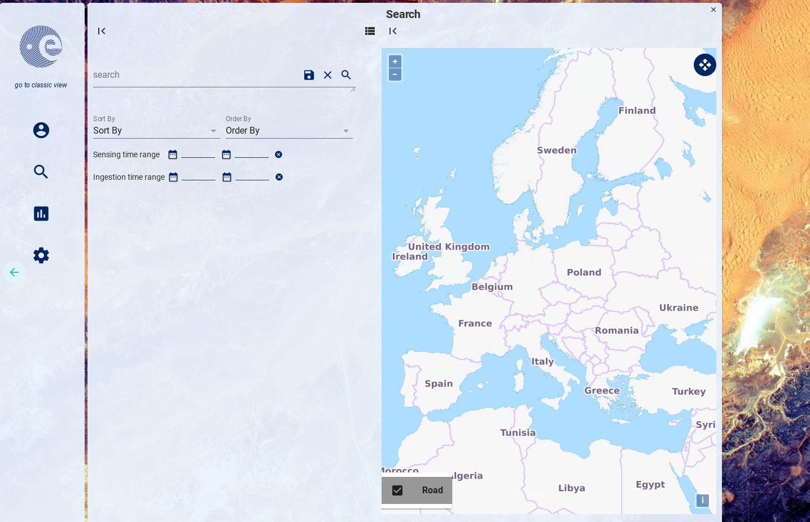

Open Web Components
Raffaele Bua - SERCO & GAEL - Vienna 2017
Open web Component is an open source project
...using the lastest web technologies
...based on web components
Core Features
Messaging among components
Authentication
Layout system
Object oriented web
Modularity
Web components
Every component follows the Object Oriented Programming exploiting Polymer library.
The web components are atomic and portable elements.
Web components implementation is available on Chrome.

Horizontal layout
Horizontal layout, the navigation system pushes the components in a horizontal stack.

EO Features
Search
Open search, free text and geographic filters. Sorting by ingestion or sensing time. Order by descending/ascending. Graphical time range selectors for sensing and ingestion time. A save search is possible. The results are shown in a list and in a map.
List comparison
Presenting two search result lists, comparing search results is possible.
Product details
Product details: Quicklook, metadata indexes and attributes.
Auxiliary data file list
List of auxiliary data file exploited to process the product.
Customization
Main menu
The main menu sections are customizable, via graphical user interface
Language
The language settings are stored locally in the browser.
Theme
Theme properties: application title, logo, panels background color, application background image.
List attributes


Configuration of List Item model. Via the semantic schema, described in the user manual.
Map settings
Configuration of map layers via the definition of the WMS url.
Admin panels
Upload Management
Products ingestion via file upload and file scanner.
Synchronizer List
List of ODATA synchronizers, to synch products between DHuS instances.
Synchronizer Editor
Editor of ODATA Synchronizers. A new version of this component is on-going, with a user friendly UI for beginners.
Eviction
Settings of product eviction.

Restore Database
Restore old database dumps.
Local archive
Ingestion via local archive folder.
Mail Configuration
Email notification system settings.
Root Configuration
Root password configuration.
Admin Users
User accounts list.
Future features
Timeline
Distribution of products by sensing time.
Flex layout
Flex layout of components, customizable via graphical user interface.

Events
- Events in products density calendar.
- Events list
- Event detail
Polar Maps
Polar maps in the map component.
Metadata processing
OWC Metadata Processing system manages user's plugins to process metadata from searches, and to create automatic tasks client side.
Extendible
New component creation
The guide how to create a new component and how to integrate in the OWC application is present in the Open Source Portal.
Documentation
- User Guide: https://github.com/buele/DataHubSystem/blob/gh-pages/OWC/USER_GUIDE.md
- API reference: http://buele.github.io/DataHubSystem/OWC/api-docs/app/docs.html
- OWC SDD Issue: 1.0
- OWC ICD, Issue: 1.0